CSMC 122 Project: Understanding the Changes in the 2016 U.S. Election
Information about the data used as well as our sources can be found at our information page.
You can access our regression tool and our mapping tool directly or below with other tools.
See pages for any county or state. For example, look at data for Cook County and IL.
Examples
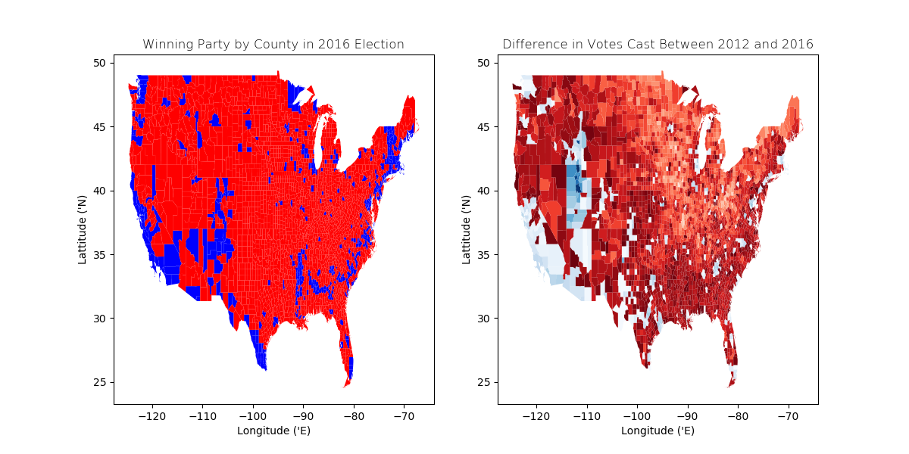
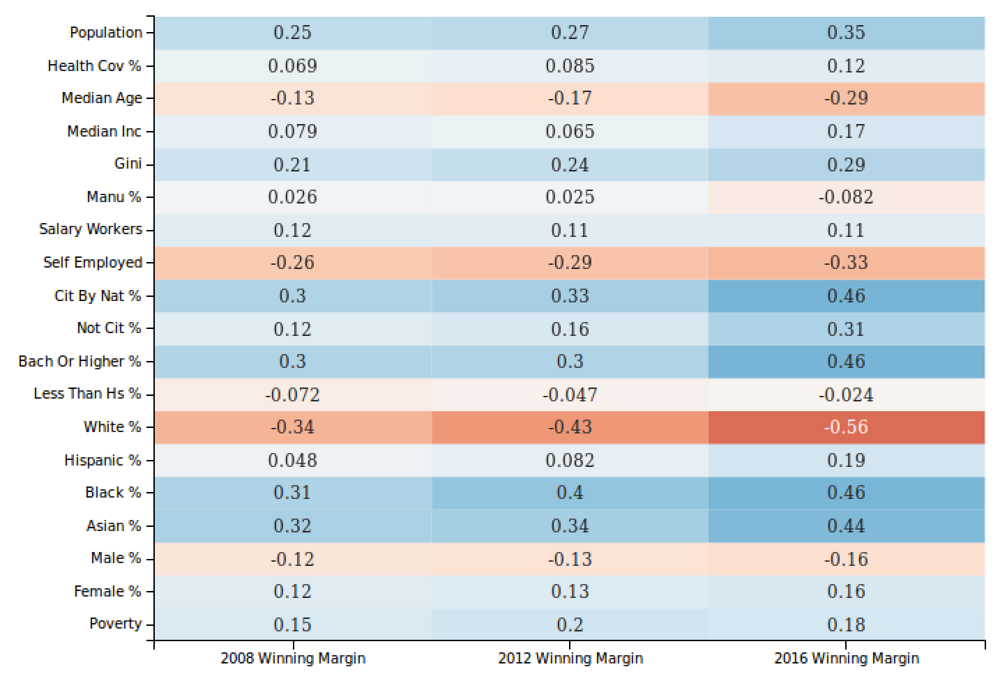
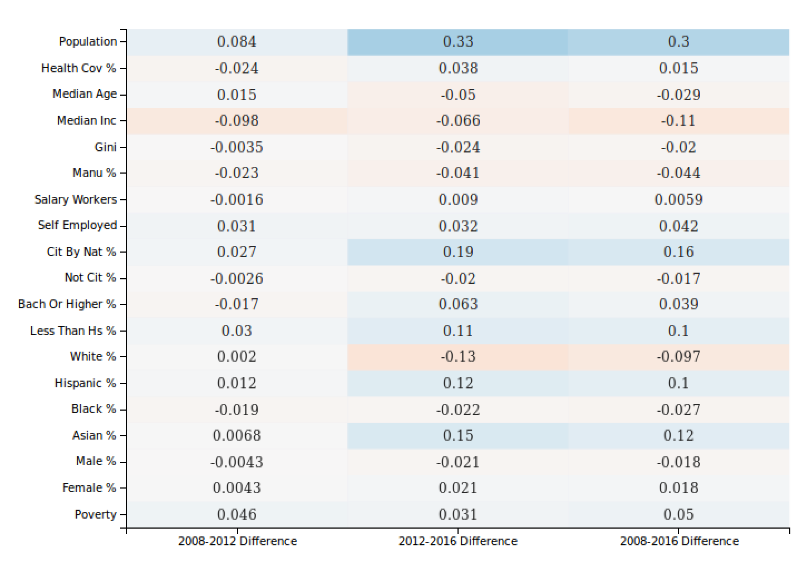
Swing State Analys
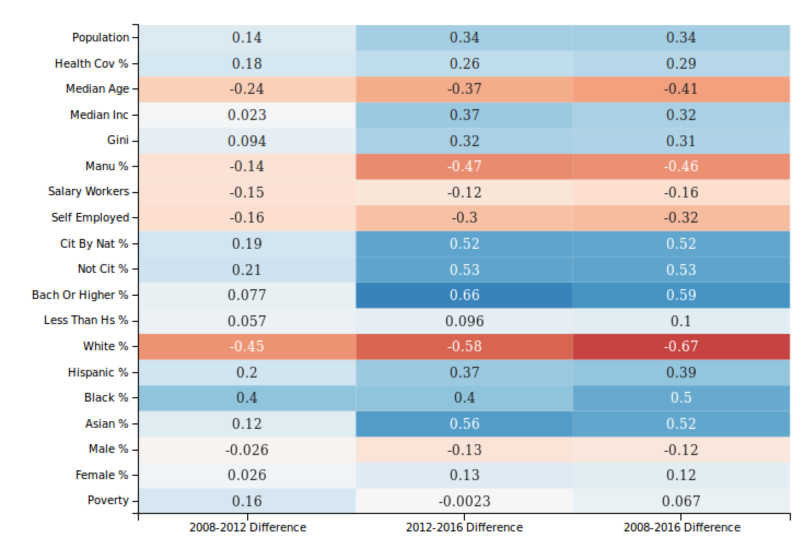
Top 250 Republican Counties vs. Top 250 Democratic Counties
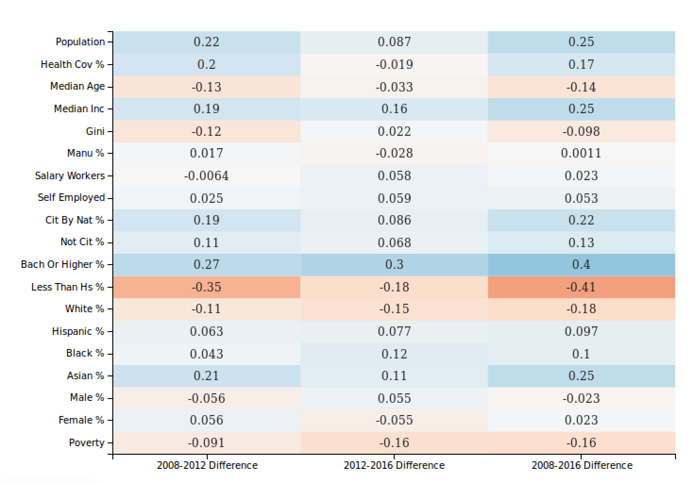
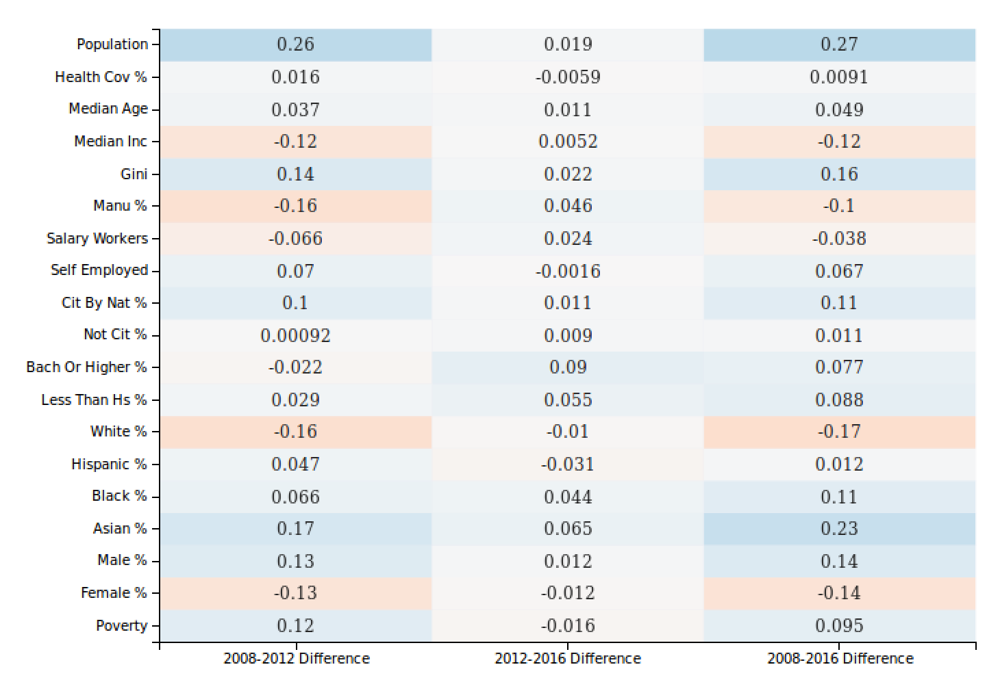
Assess Whether Popular Theories are Valid
From Boston Globe
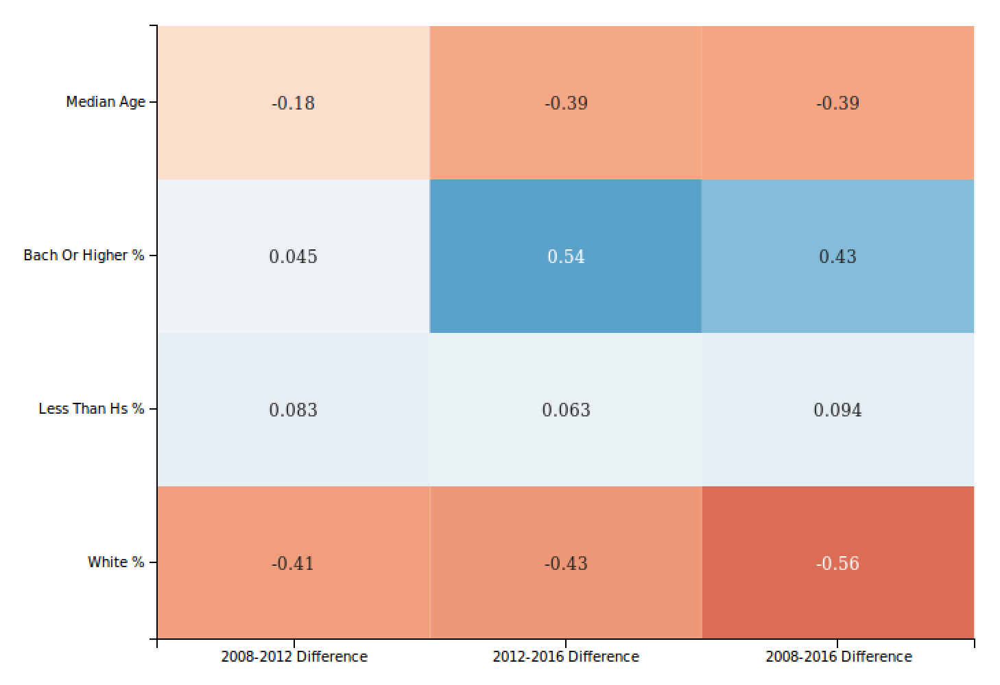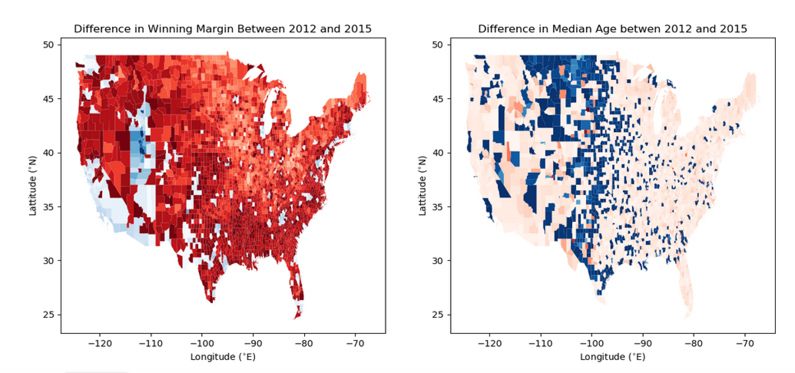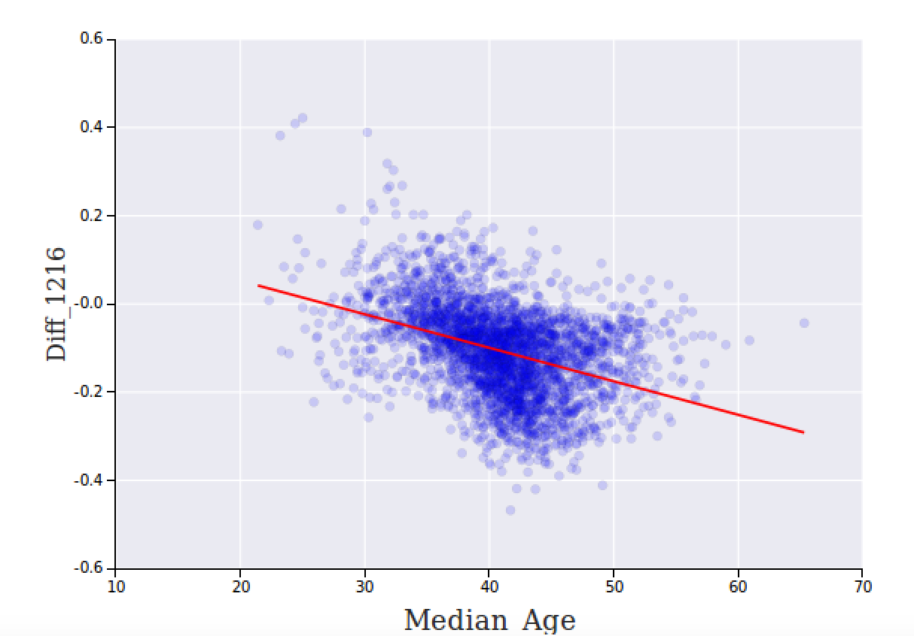
From Vanity Fair
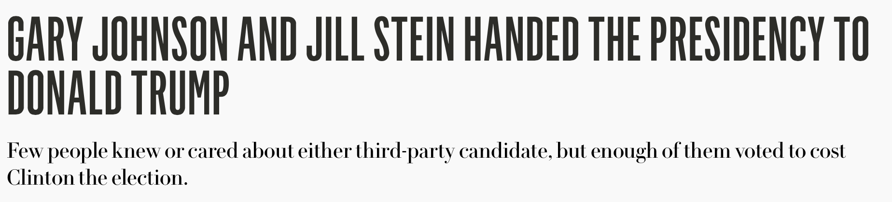
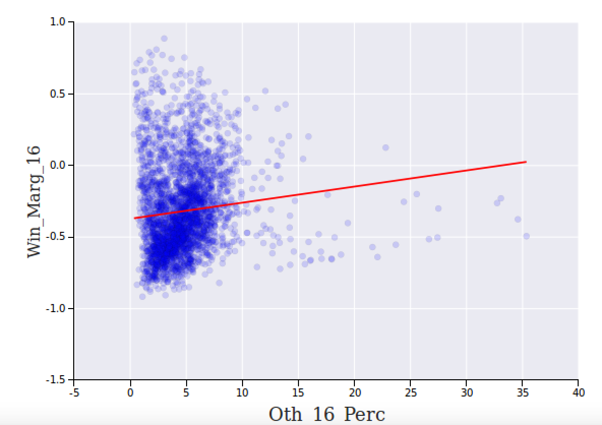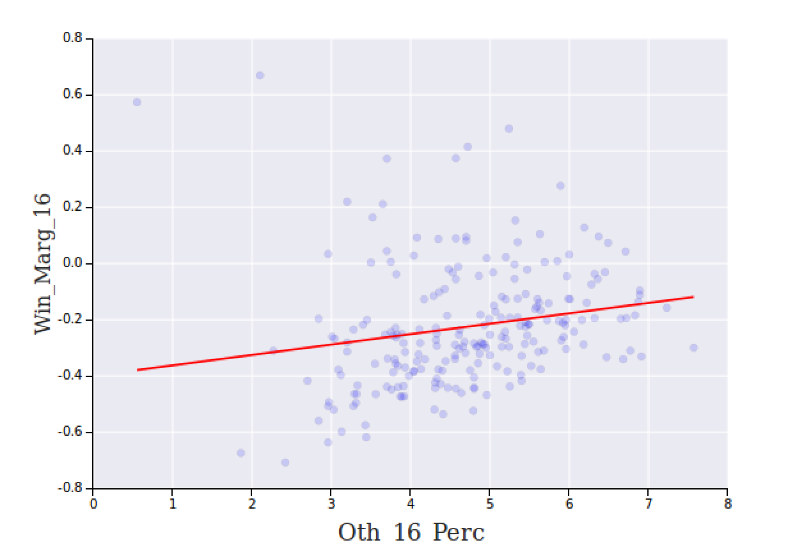
From New York Times
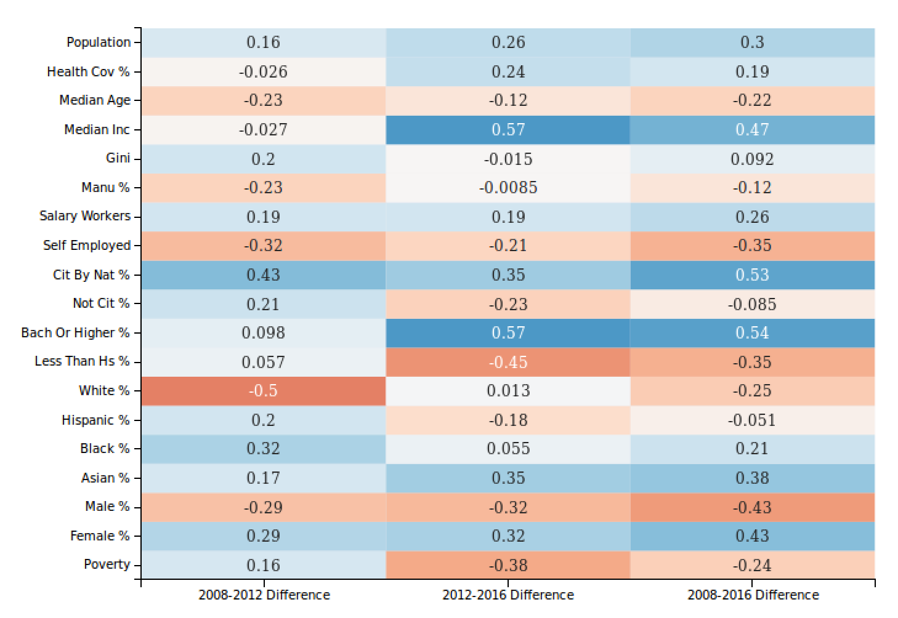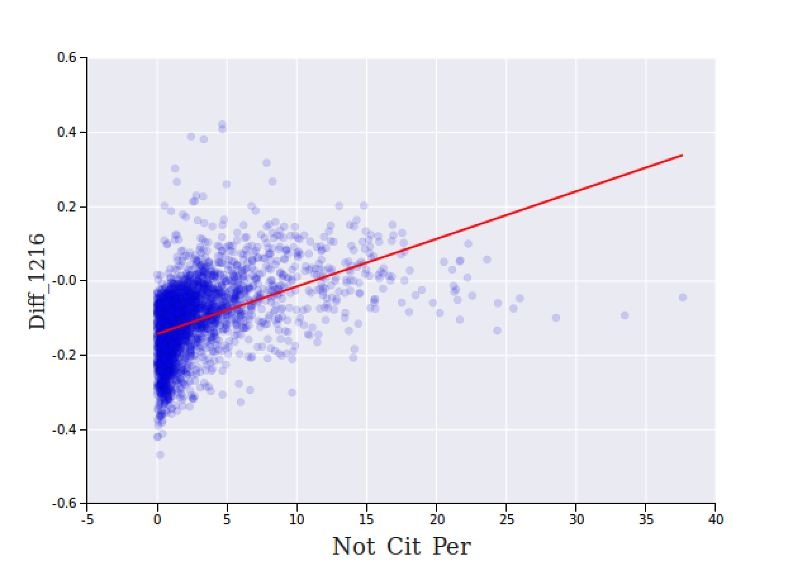